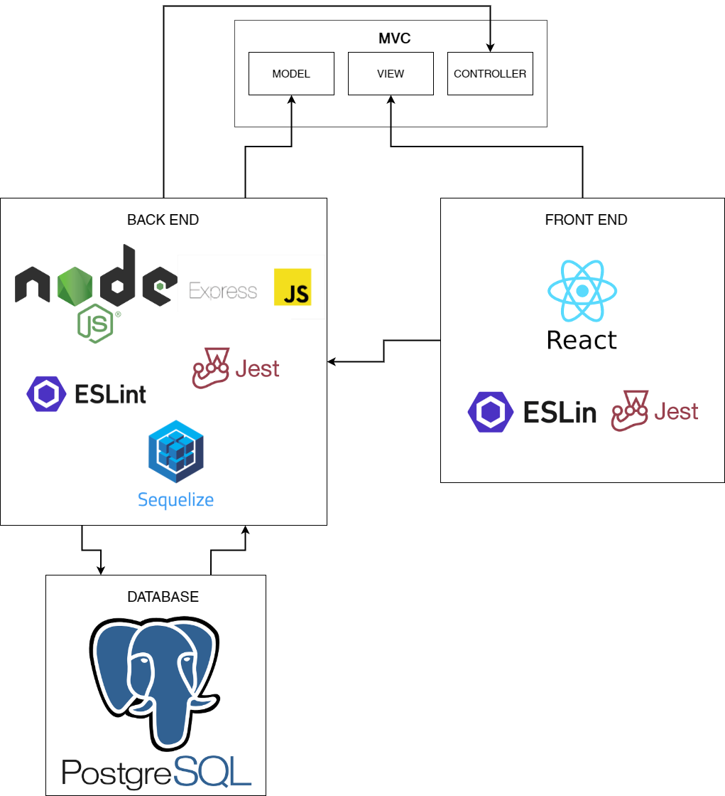
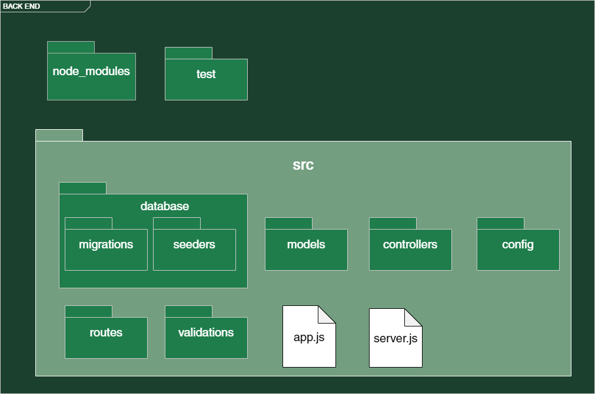
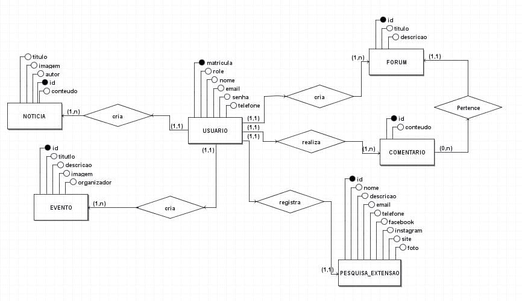

Documento de arquitetura
Histórico de versão
| Data | Versão | Descrição | Autor |
|---|---|---|---|
| 09/03/2021 | 0.1 | Criação do documento | João Lopes |
| 14/03/2021 | 0.2 | Adição da representação arquitetural | João Lopes |
Introdução
Objetivos
Este artefato tem o objetivo de fornecer uma visão geral da arquitetura da ConectaUnB. Apresenta várias visualizações de arquitetura para descrever os diferentes aspectos do sistema.
Escopo
A ConectaUnB é uma aplicação web responsável por organizar as informações da FGA, de forma que seja acessível para todos os membros da comunidade.
Representação arquitetural
Implementação
O modelo de arquitetura proposto no projeto é um modelo multicamadas, sendo composto por três camadas principais:
- Visão: camada em que os dados são visualizados a partir de uma interface gráfica implementada.
- Controladora: camada em que há o tratamento e interpretação dos eventos gerados por dispositivos de entrada.
- Modelo: camada que há persistência dos dados, sendo composta pelo banco de dados.
A comunicação entre as camadas é feita pelo modelo de arquitetura cliente-servidor. O servidor é responsável pela camada intermediária (Controladora), sendo responsável por lidar como a camada de persistência(Modelo), que fornece os dados para a manipulação, e com a camada de visualização (Visão), que representa por meio da interface gráfica os dados manipulados, no qual são requisitados por meio do protocolo de comunicação ‘http’ com as outras camadas. o Cliente neste modelo realiza as requisições interagindo com a interface gráfica.

-
Node.js: Pode ser definido com um ambiente de execução Javascript server-side, sendo possível rodar uma aplicação standalone em uma máquina, não dependendo de um browser parar a execução.
-
React: Biblioteca JavaScript mantida pelo Facebook com foco em criar interfaces de usuários em páginas web.
-
Express JS: Framework para Node.js, utilizado no back-end para o gerenciamento de rotas, middleware e de outras funções, facilitando a criação de API 's. Sendo responsável por realizar a conexão entre as camadas de persistência e de controle com a camada de visão.
-
Jest: Framework de testes criado pelo Facebook projetado para garantir a correção de código Javascript.
-
ESLint: Ferramenta de análise de código estática para identificar padrões problemáticos encontrados em código Javascript, auxiliando no processo de refatoração do código.
-
Sequelize: Definido como um ORM(Object-Relational Mapper) para Node.js, o sequelize tem suporte para PostgreSQL, realizando o mapeamento de dados relacionais (tabelas, colunas e linhas) para objetos Javascript.
-
PostgreSQL: O banco de dados escolhido para o projeto, pois possui excelente integração com a Node.js. Isso permite a utilização de UUID para colunas ID do tipo primary key, além oferecer uma gama de tipos de dados, auxiliando no desenvolvimento de um bom projeto de banco de dados.
Back-end
Estrutura de pacotes do back-end.

Front-end
Estrutura de pacotes front-end.

Banco de dados
Modelagem da estrutura do banco de dados

Metas e restrições arquiteturais
Metas
Criação de uma aplicação web que tem por finalidade organizar as informações sobre a FGA, estando disponíveis para toda a comunidade.
-
Desacoplamento: A separação do software em duas frentes: interface de usuário (front-end) e API (back-end), facilitará para a equipe de desenvolvimento a divisão de tarefas necessárias para a construção do software. Além disso, permite escolher as melhores soluções tecnológicas para a implementação de cada frente.
-
Evolução: A necessidade do desenvolvimento de novas funcionalidades poderá ser feita de forma independente na API e na interface de usuário, inclusive, adotando outras tecnologias, desde que a integração entre as duas frentes seja mantida.
Restrições
-
Expertise: A equipe possui baixa experiência de desenvolvimento com as tecnologias escolhidas.
-
Tecnologia: Se tratando de tecnologias emergentes, há muitas mudanças de versões que devem ser levadas em consideração na hora de adotar qualquer biblioteca.
Visualização dos casos de uso
Qualidade
Na API, os padrões adotados no projeto seguirão convenções do framework NodeJS, que são amplamente utilizados por projetos de diversos tamanhos.
Na interface de usuário, a utilização do React permitirá que o desenvolvimento seja realizado de forma eficiente e componentizado, com facilidade de integração com outras bibliotecas e serviços.
Os desenvolvedores do projeto também farão uso das folhas de estilo das linguagens de programação adotadas e contarão com ferramentas de análise estática, para assegurar que o desenvolvimento está de acordo com os requisitos de boas práticas de desenvolvimento de software.